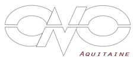

Nom utilisateur :
Mot de passe :
account_circle
Mot de passe :
Les TP du CNO Aquitaine
Un nouveau cycle de TP débute en septembre
2017. Pour plus d'informations cliquez ici.
G. Cazals
11:54 - 16/06/2017
11:54 - 16/06/2017
Le point sur les bruxismes
10 ans après, le CNO Aquitaine propose un nouveau symposium sur les
bruxismes lors des journées internationales du CNO. Des intervenants du monde entier
communiquerons lors de cet événement qui promet d'être marquant.
Pour plus d'informations, cliquez ici.
G. Cazals
11:54 - 16/06/2017
11:54 - 16/06/2017
1
2
...
8